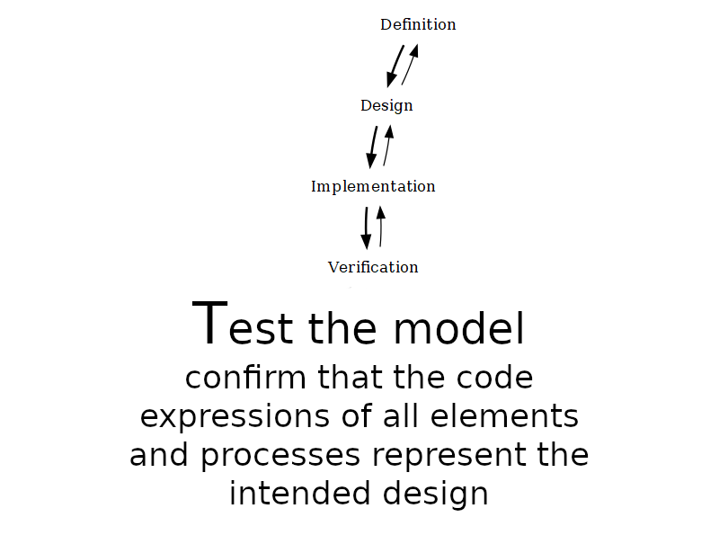
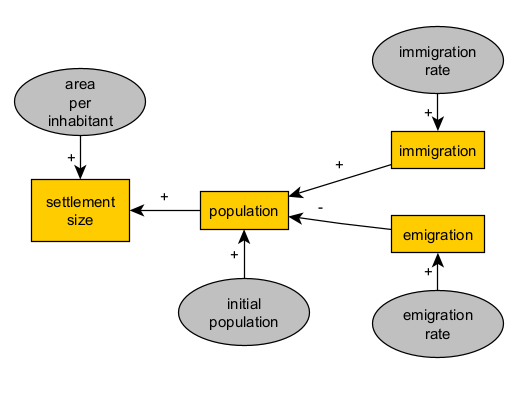
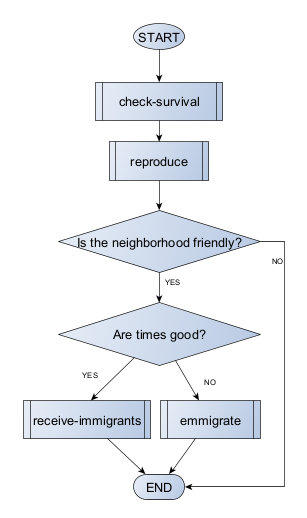

## 4. How to do ABM --- ## 4.1 Modelling "steps" <div style="position:relative; width:800px; height:595px; margin:0 auto;"> <img class="fragment" width="800" height="595" src="assets/images/Activities_def.PNG" style="position:absolute;top:0;left:0;"> <img class="fragment" width="800" height="595" src="assets/images/Activities_des.PNG" style="position:absolute;top:0;left:0;"> <img class="fragment" width="800" height="595" src="assets/images/Activities_imp.PNG" style="position:absolute;top:0;left:0;">  <img class="fragment" width="800" height="595" src="assets/images/Activities_val.PNG" style="position:absolute;top:0;left:0;"> <img class="fragment" width="800" height="595" src="assets/images/Activities_doc.PNG" style="position:absolute;top:0;left:0;"> </div> --- ## 4.2 Modelling "(mis)steps" <img src="assets/images/Activities2.PNG" alt="" style="width: 550px; border: none; box-shadow: none; margin-bottom: 0%; background-color: azure;"/> <a title="Jobi98, CC BY-SA 3.0 <https://creativecommons.org/licenses/by-sa/3.0>, via Wikimedia Commons" href="https://commons.wikimedia.org/wiki/File:Langsamer_Walzer_Grundschritt_(JPG-Datei).jpg"> <img width="400" alt="Langsamer Walzer Grundschritt (JPG-Datei)" src="https://upload.wikimedia.org/wikipedia/commons/5/5d/Langsamer_Walzer_Grundschritt_%28JPG-Datei%29.jpg?20130421104740"> <span style="font-size:small; text-align: right;">Langsamer Walzer Grundschritt by Jobi98 via Wikimedia Commons, CC BY-SA 3.0</span> </a> </div> --- ## 4.3 Best practices --- ## 4.3 Best practices ### Version control <a title="Source: “Piled Higher and Deeper” by Jorge Cham" href="http://www.phdcomics.com" target="_blank"> <img src="https://geo-python-site.readthedocs.io/en/2022.0/_images/version_control_motivation_comics.png" alt="Cartoon about version control" style="width: 350px; border: none; box-shadow: none; margin-bottom: 0%; background-color: azure;"/></a> </a> --- ## 4.3 Best practices ### Refactoring regularly <a title="Published on Medium by Cate Lawrence" href="https://medium.com/tech-debt/why-refactoring-is-important-334c9e64a980"> <img src="https://miro.medium.com/v2/da:true/resize:fit:1200/0*YKMu7VUSEzqpi_Ya" alt="Cartoon about refactoring" style="width: 550px; border: none; box-shadow: none; margin-bottom: 0%; background-color: azure;"/> <br> <span style="font-size:small; text-align: right;">Published on Medium by Cate Lawrence</span> </a> --- ## 4.3 Best practices ### Enforcing modularity <a title="Source: APRAO" href="https://www.aprao.com/blog/modular-construction" target="_blank"></a> <img src="https://www.aprao.com/hubfs/QVNIMTE0OTE3NDQ5.jpg" alt="Modular construction" style="width: 550px; border: none; box-shadow: none; margin-bottom: 0%; background-color: azure;"/> </a> <br> <span style="font-size:small; text-align: right;">Source: APRAO</span> --- ## 4.3 Best practices ### Where to find modules - [Netlogo's Models Library](https://ccl.northwestern.edu/netlogo/models/) - [NetLogo User Community Models](http://ccl.northwestern.edu/netlogo/models/community/index.cgi) - [NetLogo Modelling Commons](http://modelingcommons.org/) - [CoMSES Model Library](https://www.comses.net/) - [NASSA module library](https://archaeology-abm.github.io/NASSA-hub/) --- ## 4.3 Best practices ### Being explorative <img width="400" alt="Cartoon about exploring alternatives" src="assets/images/ChatGPT Image Oct 25, 2025, 05_19_10 PM.png"> <br> <span style="font-size:small; text-align: right;">ChatGPT Image</span> --- ## 4.3 Best practices ### Documetation: UML diagrams <a title="Derfel73; Pmerson, Public domain, via Wikimedia Commons" href="https://commons.wikimedia.org/wiki/File:UML_diagrams_overview.svg"><img width="512" alt="UML diagrams overview" src="https://upload.wikimedia.org/wikipedia/commons/thumb/e/ed/UML_diagrams_overview.svg/512px-UML_diagrams_overview.svg.png?20161201151843"></a> <br> <span style="font-size:small; text-align: right;">Derfel73; Pmerson, Public domain, via Wikimedia Commons</span> --- ## 4.3 Best practices ### Documetation: UML diagrams <a title="Jvlivs, Copyrighted free use, via Wikimedia Commons" href="https://commons.wikimedia.org/wiki/File:Restaurant-UML-UC.png"><img width="256" alt="Restaurant-UML-UC" src="https://upload.wikimedia.org/wikipedia/commons/4/48/Restaurant-UML-UC.png?20061214232237"></a> <br> <span style="font-size:small; text-align: right;">Use case diagram. Jvlivs, Copyrighted free use, via Wikimedia Commons</span> --- ## 4.3 Best practices ### Documetation: ODD protocol <a title="Source: Grimm et al. (2020)" href="https://www.jasss.org/23/2/7.html" target="_blank"> <img src="https://www.jasss.org/23/2/7/Figure3.png" alt="Example of visualisation of ODDs" style="width: 550px; border: none; box-shadow: none; margin-bottom: 0%; background-color: azure;"/> </a> <br> <span style="font-size:small; text-align: right;">Grimm et al. (2020)</span> --- ## 4.4 Learning resources ## Textbook <a title="Romanowska, Iza, Colin D. Wren, and Stefani A. Crabtree. 2021. Agent-Based Modeling for Archaeology. Electronic. SFI Press. https://doi.org/10.37911/9781947864382." href="https://www.sfipress.org/books/agent-based-modeling-for-archaeology/" target="_blank"> <img src="https://images.squarespace-cdn.com/content/v1/5d420e5d999d0200013d33c3/1627317989462-IAE7BQS6DCVWZDUZ49Q2/Screen+Shot+2021-07-26+at+9.57.13+AM.png?format=1500w" alt="Carrignon et al. 2020 - Fig. 2" style="width: 350px; border: none; box-shadow: none; margin-bottom: 0%;"/> </a> <br> <span style="font-size:small; text-align: right;">Romanowska, Iza, Colin D. Wren, and Stefani A. Crabtree. 2021. Agent-Based Modeling for Archaeology. Electronic. SFI Press. https://doi.org/10.37911/9781947864382.</span> --- ## 5. Conceptual modelling of processes <img width="400" src="assets/images/Activities_def.PNG"> <img width="400" src="assets/images/Activities_des.PNG"> --- ## 5. Conceptual modelling of processes ### Representation, mechanism and validation >Given a general topic of interest associated with a specific type of archaeological evidence, we must develop a conceptual model that includes a definition of the minimum features of a phenomenon or system (**representation**), with the aim of its mathematical formalization (**mechanism**). So that it contributes to the answer to one or more research questions or to refute or reformulate a working hypothesis (**validation**). --- ## 5. Conceptual modelling of processes ### Initial step in "formalisation" <img src="https://github.com/Andros-Spica/modelling-simulation-graphs/blob/main/representation-and-validation/representation-and-validation.png?raw=true" alt="representation and validation in explanatory models in archaeology" style="width: 650px; border: none; box-shadow: none; margin-bottom: 0%; background-color: azure;"/><br> <br> <span style="font-size:small; text-align: right;">Representation and validation in explanatory models in archaeology</span> --- ## 5. Conceptual modelling of processes ### Recommendations - Consider the maximum number of alternative explanations - Then select the most plausible - And then, formalise it by defining the essential elements of the phenomenon - Keep in mind that the model is a simplification of reality - And that it should be implemented and explored in simulations - Start with a simple model, coming from your first informed intuition, and then add complexity as needed --- ## 5.1. Considering archaeological evidence and its interpretations (*explanations*) ## Key concepts - Evidence: the physical remains or data that archaeologists uncover - Phenomenon: the pattern or process inferred from the evidence - Mechanism: the causal explanation of why the phenomenon occurred --- ## 5.1. Considering archaeological evidence and its interpretations (*explanations*) ## Examples <br> <br> <span style="font-size:small; text-align: right;">Examples of archaeological evidence and its interpretations (see more in the guide)</span> --- ## 5.1 Considering archaeological evidence and its interpretations (*explanations*) ## Three paths to formalisation - **Path 1**: From evidence to phenomenon to mechanism - **Path 2**: From phenomenon to evidence and mechanism - **Path 3**: From mechanism to evidence and phenomenon No shortcuts: prior (domain) knowledge is essential --- ## 5.2 Diagraming for simulation modelling ## Graphs and networks Graphs are a powerful tool for representing complex systems. They can be used to represent: - the structure of a system, the flow of information, or the flow of resources - the dynamics of a system, the interactions between agents, or the evolution of a system over time - the spatial structure of a system, the location of agents, or the movement of agents - the temporal structure of a system, the timing of events, or the duration of events Keep in mind UML types of diagrams, for inspiration and guidance --- ## 5.2 Diagraming for simulation modelling <a title="Adoption_CLD.gif:Apdevries at en.wikipedia derivative work: Blleininger, CC BY-SA 3.0 <http://creativecommons.org/licenses/by-sa/3.0/>, via Wikimedia Commons" href="https://commons.wikimedia.org/wiki/File:Adoption_CLD.svg"><img width="400px" alt="Adoption CLD" src="https://upload.wikimedia.org/wikipedia/commons/thumb/e/ea/Adoption_CLD.svg/512px-Adoption_CLD.svg.png?20100626011908"></a> <a title="The original uploader was Apdevries at English Wikipedia., CC BY-SA 3.0 <http://creativecommons.org/licenses/by-sa/3.0/>, via Wikimedia Commons" href="https://commons.wikimedia.org/wiki/File:Adoption_SFD.png"><img width="300px" alt="Adoption SFD" src="https://upload.wikimedia.org/wikipedia/commons/3/3b/Adoption_SFD.png?20140810144917"></a> [Causal diagrams and "stocks and flows" or Forrester diagrams](https://en.wikipedia.org/wiki/System_dynamics): helpful in relating the change of aggregate variables (stocks) to parameters and other variables (flows). --- ## 5.2 Diagraming for simulation modelling <a title="svg by Booyabazookaoriginal png by Wapcaplet, CC BY-SA 3.0 <http://creativecommons.org/licenses/by-sa/3.0/>, via Wikimedia Commons" href="https://commons.wikimedia.org/wiki/File:LampFlowchart.svg"><img width="200px" alt="A simple flowchart for troubleshooting a broken lamp." src="https://upload.wikimedia.org/wikipedia/commons/thumb/9/91/LampFlowchart.svg/256px-LampFlowchart.svg.png?20220918192641"></a> [Flowcharts](https://en.wikipedia.org/wiki/Flowchart): useful for representing flows of logic governed by a predetermined structure, especially when conditionals are involved (e.g. decision-making). In agent-based models, they can be used to represent modular *processes* --- ## 5.3 Designing an explanatory mechanism - **not** a "recipe" for a full-developed model, but a **guide** to the model design process - the most important step in the modelling process - skill that improves with practice - be careful when using "standard" models; they may not be appropriate as-is for your case study --- ## 6. Example: Settlement size, population and migration (Path 2: from phenomenon to evidence and mechanism) --- ## 6.1 Starting simple ### initial postulate/hypothesis >the increase in the built-up area of an archaeological site, which we assumed to be a settlement, is explained by population growth due to migratory influx. --- ## 6.1 Starting simple ### Cases or scenarios >↑ immigration → ↑ population → ↑ settlement size >↓ immigration → ↓ population → ↓ settlement size --- ## 6.1 Starting simple ### graphing causality  --- ## 6.1 Starting simple ### algebraic representation >settlementSize = *f*(population) = *f*( *g*(immigration) ) or >settlementSize = *f*(population) >population = *g*(immigration) where *f* and *g* are functions, yet to be defined. --- ## 6.1 Starting simple ### reading our formalisation (equations) >Settlement size (variable) is a function (depends on) population (variable). >Population (variable) is a function (depends on) immigration (variable). (causal graph) >Settlement size (variable) is a function (depends on) population (variable) as a positive term (+). >Population (variable) is a function (depends on) immigration (variable) as a positive term (+). --- ## 6.2 Towards a balance between representation and complexity - Do you think this is a satisfactory description of our explanation? - Does it leave out something we implicitly assumed with our first informal explanation? - Is it going too far, stating something that we did not intend in the first place? criteria: **logic** and **contextual knowledge** --- ## 6.2 Towards a balance between representation and complexity ### Unit conversion >settlementSize = *f*(areaPerInhabitant * population) --- ## 6.2 Towards a balance between representation and complexity ### Initial conditions and time >population = *g*(**initialPopulation**, immigration) >settlementSize = *f*(areaPerInhabitant * population, **time**) >population = *g*(initialPopulation, immigration, **time**) >settlementSize = *f*(population, **time**) >population = *g*(initialPopulation, immigration, **time**) >immigration = *h*(immigrationRate, **time**) --- ## 6.2 Towards a balance between representation and complexity ### Updating the causal graph <img src="assets/images/conceptual-model-example-2.png" width="400"> <br> <span style="font-size: 0.6em">Conceptual model after adding a few parameters</span> --- ## 6.2 Towards a balance between representation and complexity ### Rationale for increasing complexity - **Logic**: we need to be able to express the phenomenon we are interested in. (want to) - **Contextual knowledge**: we need to be able to express the phenomenon in a way that is consistent with our knowledge of the world. (can do) >Variable: it varies with time. It is part of the object of interest and its dynamics are interpreted as outputs of the phenomenon (≈model). >Parameter: it does not vary with time, but it can vary between instances of the phenomenon (≈simulation runs). It is considered as an input of the phenomenon (≈model). --- ## 6.3 Reusing consolidated structures  <br> <span style="font-size: 0.6em">Conceptual model after structure duplication</span> --- ## 6.4 Adding feedback loops <img src="assets/images/conceptual-model-example-4.png" width="400"> <br> <span style="font-size: 0.6em">Conceptual model after adding a two-variable feedback loop</span> ><small>Population (variable) is a function (depends on) emigration (variable) as a negative term (-).</small> ><small>Emigration (variable) is a function (depends on) population (variable) as a positive term (+).</small> --- ## 6.4 Adding feedback loops <img src="assets/images/conceptual-model-example-5.png" width="400"> <br> <span style="font-size: 0.6em">Conceptual model after adding a one-variable feedback loop</span> ><small>population = naturalGrowthRate * population + immigrationRate - emmigrationRate * population</small> ><small>settlementSize = areaPerInhabitant * population</small> --- ## 6.5 Expressing conditions as logic bifurcations 1. The political relationship between this and neighbours (friendly/hostile) 2. The general state of prosperity in the settlement (e.g. a combined factor of subsistence, well-being and raw material availability), summarised with a binary classification between *good* and *bad* times. > IF friendly AND good times THEN [...] > IF friendly AND bad times THEN [...] > IF hostile AND good times THEN [...] > IF hostile AND bad times THEN [...] The logic bifurcations are not part of the causal graph, but the model's logic. --- ## 6.5 Expressing conditions as logic bifurcations <img src="assets/images/conceptual-model-example-6.png" width="500"> <br> <span style="font-size: 0.6em">Conceptual model after adding <b>one</b> logic bifurcation</span> --- ## 6.5 Expressing conditions as logic bifurcations <br> <span style="font-size: 0.6em">Conceptual model after adding <b>two</b> logic bifurcations</span> --- ## 6.6 Representing distributed and social mechanisms  <br> <span style="font-size: 0.6em">Conceptual model after conversion to agent-based</span> --- ## 6.6 Representing distributed and social mechanisms <img src="assets/images/conceptual-model-example-9.png" width="400"> <br> <span style="font-size: 0.6em">a tentative "reproduce" process</span> Thinking modularly is a good way to keep the model simple and manageable. --- ## 7. Your turn! (individual or group work) - Pen and paper or your preferred sketching digital platform (tablet, laptop). - A subject of interest in archaeology, preferably familiar to you - Or a model that has been explained verbally, but never formalised (e.g. paper) Remember: >explanation here means that evidence is associated with a phenomenon, a process, and a mechanism (i.e., causal relationships).